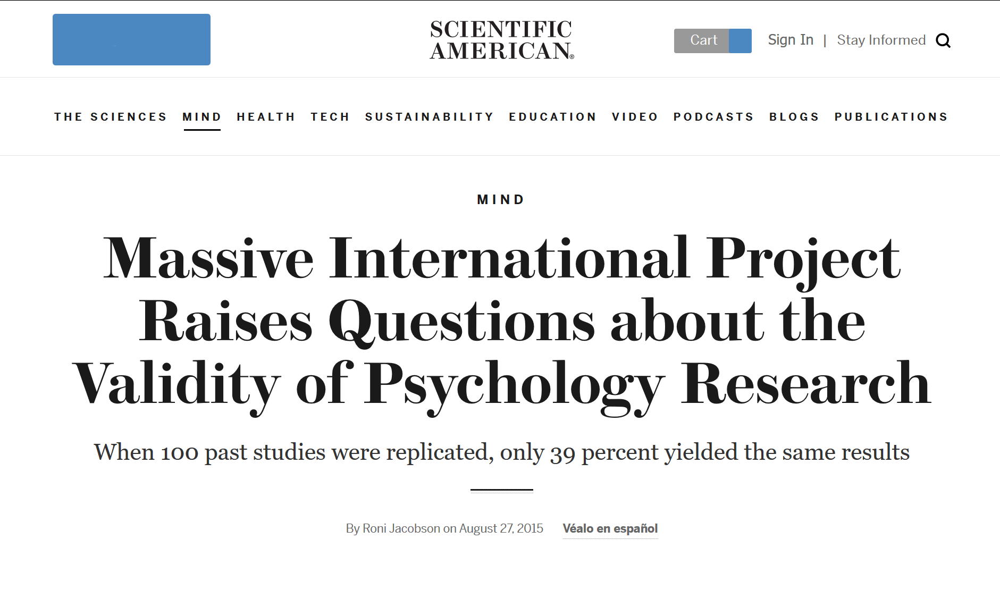
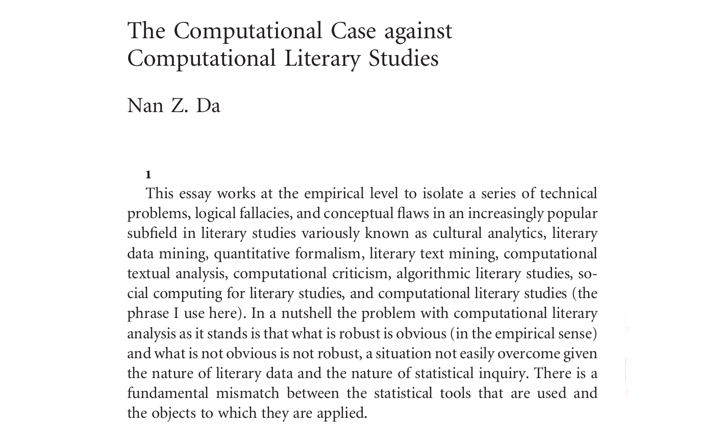
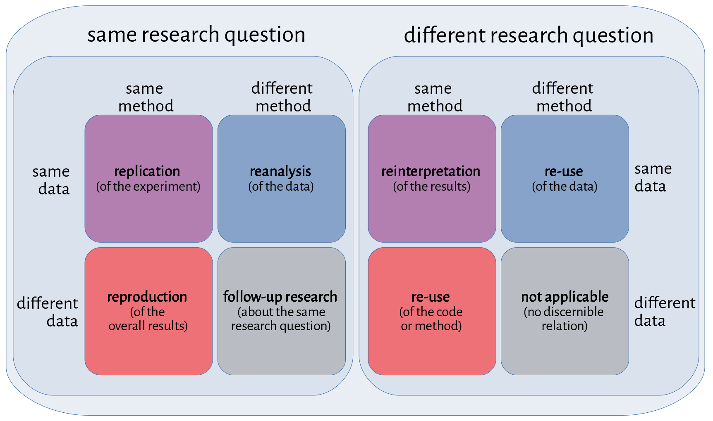
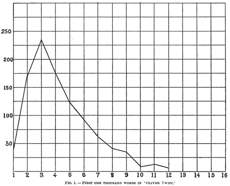
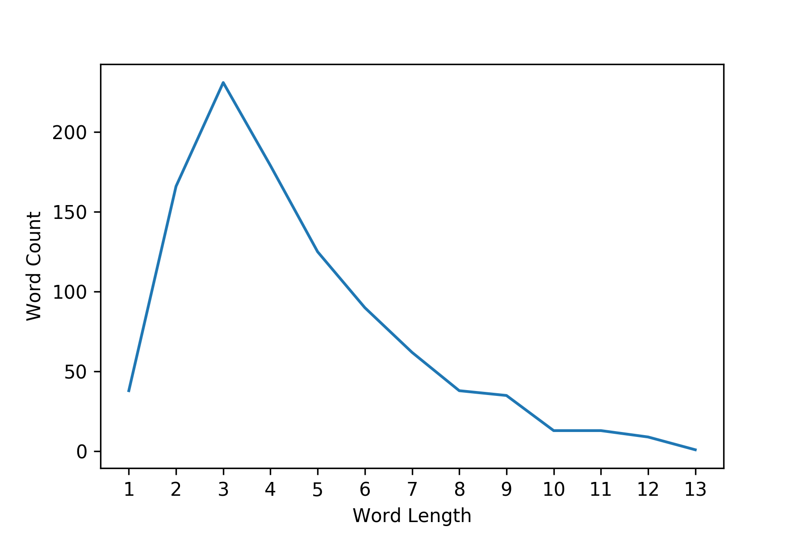
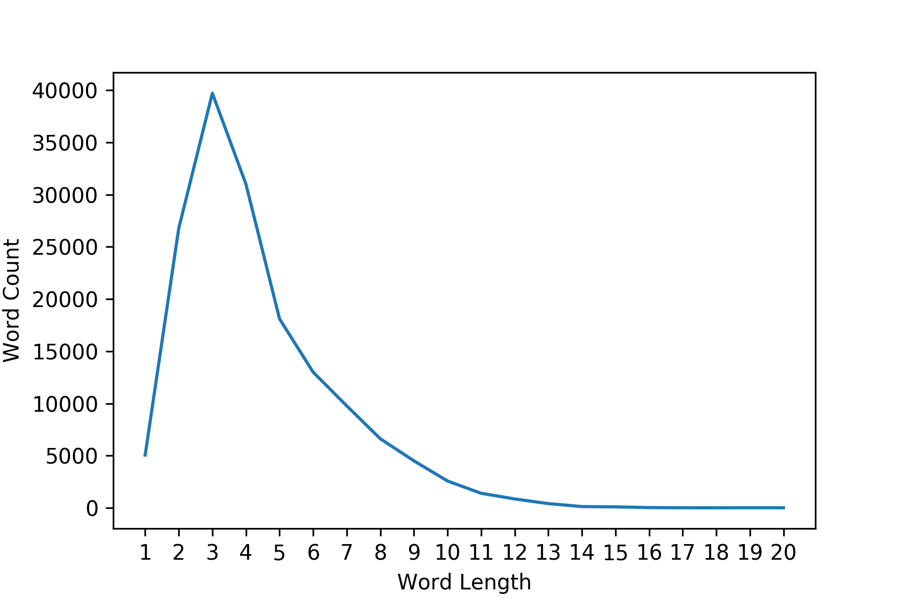
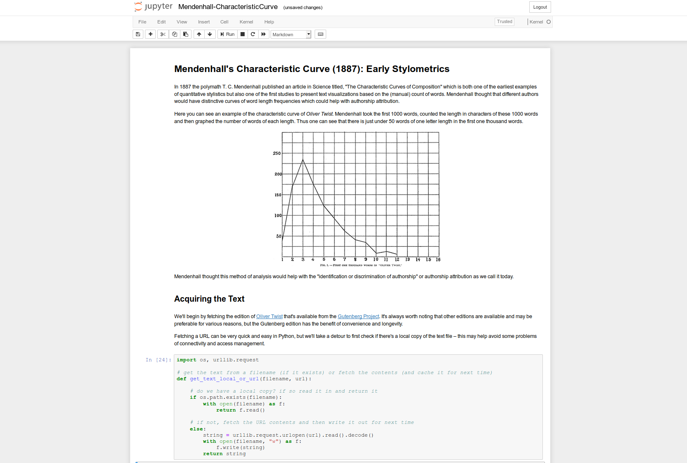
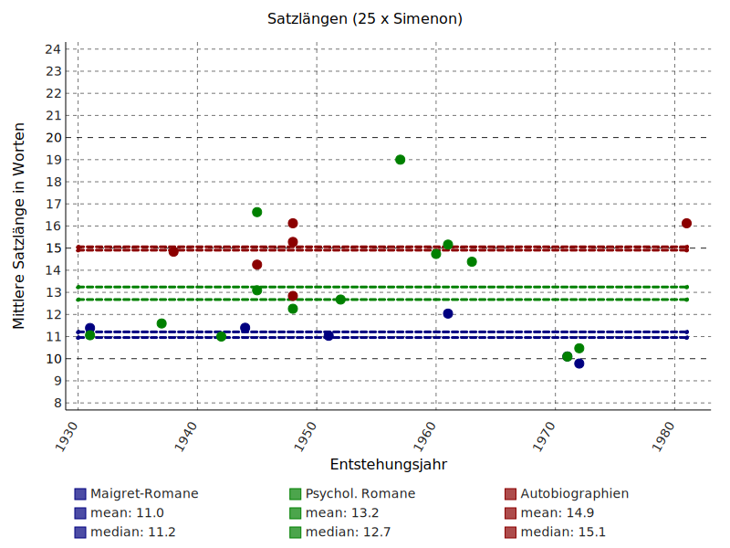
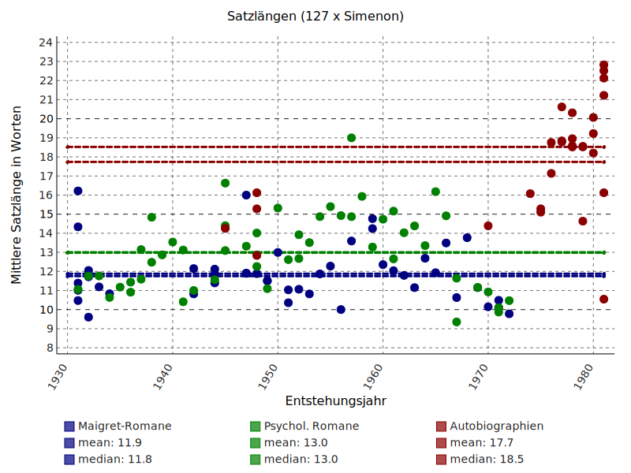
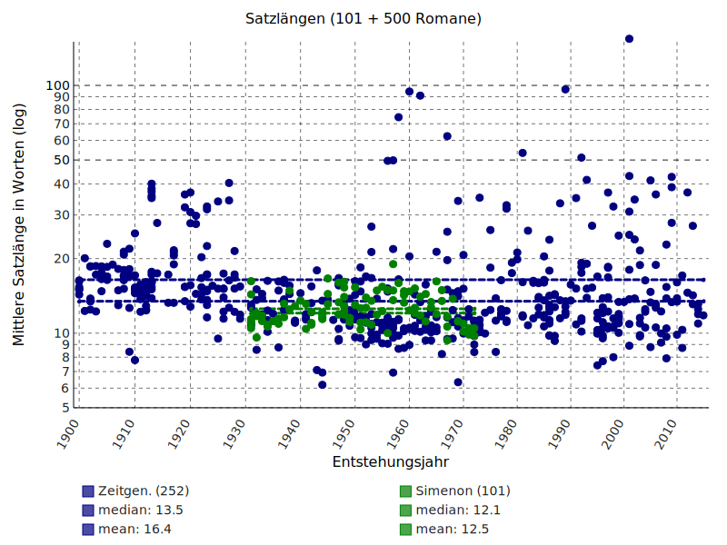

<!doctype html>
<html lang="en">
<head>
<meta charset="utf-8">
<!-- CUSTOMIZE THIS! -->
<title>Repeating and Repeatable, Budapest 2019</title>
<meta name="author" content="Christof Schöch">
<!-- END -->
<meta name="description" content="Slides">
<meta name="apple-mobile-web-app-capable" content="yes">
<meta name="apple-mobile-web-app-status-bar-style" content="black-translucent">
<meta name="viewport" content="width=device-width, initial-scale=1.0, maximum-scale=1.0, user-scalable=no, minimal-ui">
<link rel="stylesheet" href="css/reveal.css">
<link rel="stylesheet" href="css/theme/simple.css" id="theme">
<!-- Code syntax highlighting -->
<link rel="stylesheet" href="lib/css/zenburn.css">
<!-- Printing and PDF exports -->
<script>
var link = document.createElement( 'link' );
link.rel = 'stylesheet';
link.type = 'text/css';
link.href = window.location.search.match( /print-pdf/gi ) ? 'css/print/pdf.css' : 'css/print/paper.css';
document.getElementsByTagName( 'head' )[0].appendChild( link );
</script>
<!--[if lt IE 9]>
<script src="lib/js/html5shiv.js"></script>
<![endif]-->
</head>

<body>
<div class="reveal">
<div class="slides">
<section data-markdown="" data-separator="^\n---\n" data-separator-vertical="^\n--\n" data-charset="utf-8" data-background-image="img/basics/uni-trier-icon.png" data-background-size="50px" data-background-position="top 10px right 10px">
<script type="text/template">

<!-- THIS IS WHERE THE CONTENT GOES! -->
<!-- Any section element inside of this container is displayed as a slide -->

##Repeating and Repeatable, or: Distant Reading between Past and Future
<br/>
<hr/>
<br/>
Christof Schöch (Trier)
<br/>https://christof-schoech.de/en/
<br/>
<br/>
**DH_Budapest 2019: "Distant Reading"**
**Budapest, Sept. 27, 2019**
<br/>
<hr/>
<br/>
</img>


---
## Repeating and Repeatable: Distant Reading between Past and Future
<br/>
1. [Introduction](#/2)
	1. [Motivation](#/2/1)
	1. [Typology](#/2/5)
2. [Case studies](#/3)
    1. [Thomas C. Mendenhall](#/3/1)
    1. [François Richaudeau](#/3/6)
    1. [Leo Spitzer](#/3/8)
3. [Conclusions](#/4)


---
<br/>
<br/>
# 1. Introduction


--
<br/>
<br/>
## 1.1 Motivation

--
<a href="img/chainsaw-flowers.png"></a>
<p>Can literary texts usefully be analyzed using computers?</p>

--
<a href="img/replication_scientific-american.png"></a>
<p>See: Open Science Foundation, Reproducibility Project, https://osf.io/ezcuj</p>

--
<a href="img/da_title.png"></a>
<p>Nan Z. Da (2019) in _Critical Inquiry_</p>


--
<br/>
<br/>
## 1.2 Typology

--
<a href="img/typology2.png"></a>
<p>Typology of repeating and repeatable research</p>

---
<br/>
<br/>
# 2. Case Studies

--
<br/>
<br/>
## Mendenhall (1887)<br/>repeated by<br/>Rockwell and Sinclair (2016)

--
<a href="img/epistemologica_mendenhall-oliver-twist.png"></a>
<p>Mendenhall (1887): Oliver Twist (1000 words)</p>

--
<a href="img/epistemologica_twist-1000.png"></a>
<p>Sinclair and Rockwell: Oliver Twist (1000 words)</p>

--
<a href="img/epistemologica_twist-full.png"></a>
<p>Mendenhall: Oliver Twist (full novel)</p>

--
<a href="img/epistemologica_jupyter-notebook.png"></a>
<p>Jupyter Notebook: https://github.com/sgsinclair/epistemologica</p>


--
<br/>
<br/>
## Richaudeau (1982)<br/>repeated by<br/>myself (2016)


--
<a href="img/richaudeau_title.png"></a>
<p>Richeaudeau on sentence length in Simenon (1982)</p>

--
<a href="img/richeaudeau_table-des-25.png"></a>
<p>Richaudeau on Georges Simenon</p>

--
<a href="img/sentlen-simenon_25.svg"></a>
<p>Repetition: same 25 texts by Simenon</p>

--
<a href="img/sentlen-simenon_127.svg"></a>
<p>Repetition: 127 texts by Simenon</p>

--
<a href="img/sentlen-romans_101+500.svg"></a>
<p>Repetition: Simenon's novels and 500 contemporary novels</p>


--
<br/>
<br/>
## Leo Spitzer (1928)<br/>repeated by<br/>myself (2017)


--
<a href="img/spitzer_entgrenzendes-où-168.png"></a>
>Spitzer (1928): "The border-erasing 'where' has the same effect of effacing contours and occurs particularly with abstract nouns, for which one cannot easily imagine a location, or an enclosed space, into which the 'where' is meant to point."

--
<a href="img/spitzer_txm-query.png"></a>
<p>The relative pronooun où following abstract nouns, in TXM</p>

--
<a href="img/spitzer_signifikanz.svg"></a>
<p>Racine compared to contemporary authors of tragedies</p>


---
<br/>
<br/>
# 3. Conclusions


--
## Challenges
<br/>
* Potential conflict with disciplinary values <!-- .element: class="fragment" data-fragment-index="1" -->
* Lack of relevant, available data <!-- .element: class="fragment" data-fragment-index="2" -->
* Level of faithfulness and deviation <!-- .element: class="fragment" data-fragment-index="3" -->


--
## Benefits
<br/>
* Foster a better understanding of earlier and your own research <!-- .element: class="fragment" data-fragment-index="1" -->
* Ensure the diachronic, disciplinary continuity in Digital Literary Studies <!-- .element: class="fragment" data-fragment-index="2" -->
* Enable systematic progress in methods of analysis <!-- .element: class="fragment" data-fragment-index="3" -->


--
## Agenda
<br/>
* Refer to relevant earlier work not just through citation, but through repetition <!-- .element: class="fragment" data-fragment-index="1" -->
* Make data and code available and understandable as a matter of principle <!-- .element: class="fragment" data-fragment-index="2" -->
* Enable not only replication, but multiple modes of reuse <!-- .element: class="fragment" data-fragment-index="3" -->


--
## References
<small>

* Spitzer, Leo. 1928. "Die klassische Dämpfung in Racines Stil". _Archivum romanicum_ 12: 361–472.
* Mendenhall, Thomas C. 1887. "The Characteristic Curves of Composition". _Science_ ns-9 (214S): 237–46. https://doi.org/10.1126/science.ns-9.214S.237.
* Rockwell, Geoffrey. 2016. "Replication as a Way of Knowing in the Digital Humanities". In: _Lectures in Digital Humanities_. Würzburg.
* Lincoln, Matthew. 2016. "Social Network Centralization Dynamics in Print Production in the Low Countries, 1550-1750", _International Journal for Digital Art History_ 2.2, 134-157. 
* Sinclair, Stéfan and Geoffrey Rockwell. ongoing. "Epistemologica". https://github.com/sgsinclair/epistemologica
* Richaudeau, François. 1982. "Simenon : une écriture pas si simple qu’on le penserait". _Communication & Langages_ 53.1: 11–32. https://doi.org/10.3406/colan.1982.1484.
* Center for Open Science (coord.). 2012-2018. _Reproducibility Project: Psychology_. Open Science Foundation, https://osf.io/ezcuj/. 

<p><br/>With thanks to pygal and reveal.js</p>


</small>


---
<br/>
<br/>
<br/>
## Thank you!
<br/>
<br/>
<br/>
<br/>
<br/>
<br/>
<br/>
<hr/>
Christof Schöch, 2019
<br/><a href="https://christofs.github.io/">christofs.github.io</a>
<br/><a href="https://creativecommons.org/licenses/by/4.0/">CC-BY 4.0</a>
<hr/>
<br/>
<br/>
</script>
</section>


<!-- DON'T TOUCH UNLESS YOU KNOW WHAT YOU'RE DOING :-) -->
</div>
<script src="lib/js/head.min.js"></script>
<script src="js/reveal.js"></script>
<script>
// Full list of configuration options available at:
// https://github.com/hakimel/reveal.js#configuration
Reveal.initialize({
    controls: true,
    progress: true,
    history: true,
    center: true,
    transition: 'slide', // none/fade/slide/convex/concave/zoom
    // Optional reveal.js plugins
    dependencies: [
        { src: 'lib/js/classList.js', condition: function() { return !document.body.classList; } },
        { src: 'plugin/markdown/marked.js', condition: function() { return !!document.querySelector( '[data-markdown]' ); } },
        { src: 'plugin/markdown/markdown.js', condition: function() { return !!document.querySelector( '[data-markdown]' ); } },
        { src: 'plugin/highlight/highlight.js', async: true, callback: function() { hljs.initHighlightingOnLoad(); } },
        { src: 'plugin/zoom-js/zoom.js', async: true },
        { src: 'plugin/notes/notes.js', async: true }
        ]
    });
</script>
</body>
</html>
